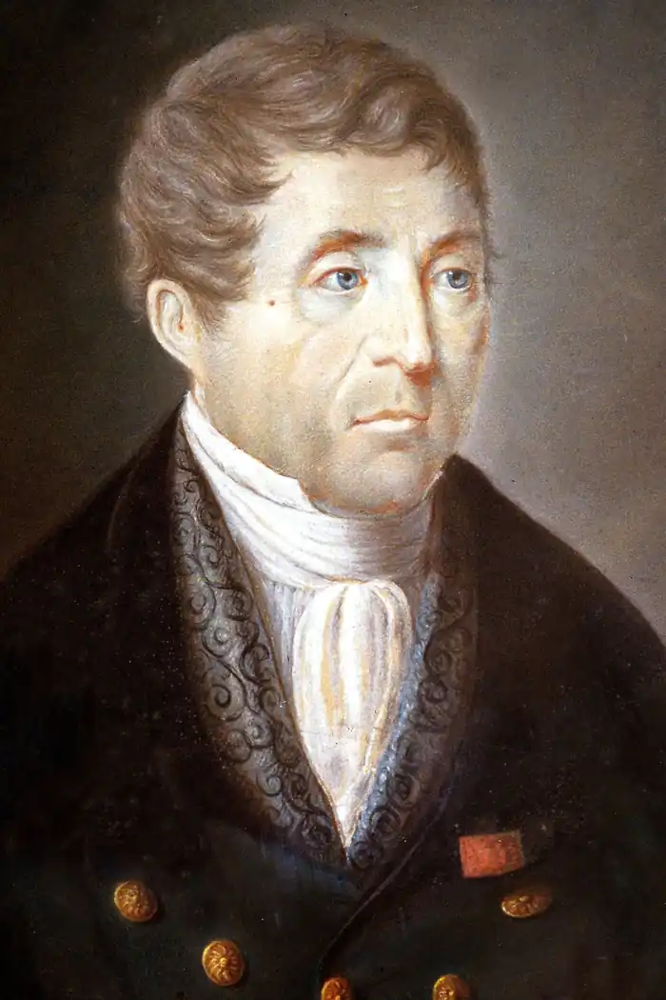

Клод Жозеф Руже де Ліль
французький поет і композитор, в 1792 р написав слова і музику для революційного гімну "Марсельєза".
Був військовим інженером, дослужився до звання капітана. Пісня, обезсмертила його ім'я, Марсельєза, була написана в Страсбурзі, де в квітня 1792 року була розквартирована його частина. Перша частина пісні називалася "Бойова пісня Рейнської армії", а назва "Марсельєза" отримав пізніше завдяки політику Шарлю Жану Марі Барбару, уродженцю Марселя. Був помірним республіканцем. Після приходу до влади якобінців подав у відставку, а потім він був звинувачений в контрреволюційній діяльності і кинутий у в'язницю. Тільки падіння Робесп'єра врятувало його. Був звільнений після термідоріанського перевороту. Написав кілька інших пісень на манер Марсельєзи, які опублікував в 1825 р в збірнику "Французькі пісні", де також було близько 50 пісень різних авторів, музику до яких написав Руже де Ліль. Його "Есе в віршах і прозі" (1797) містять Марсельєзу. Розповіді "Adelaide et Monville" про сентиментальному дитину; а також кілька інших віршів. Переклав на французький байки І. А. Крилова. Входив в рух сен-симонистов, написав для них "Гімн індустріалів".